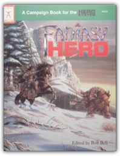
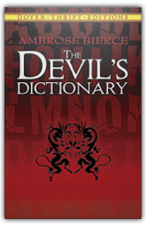
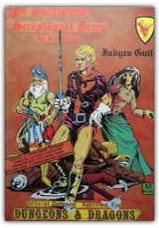
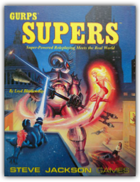
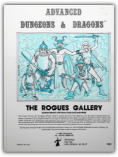
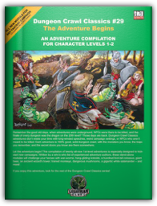
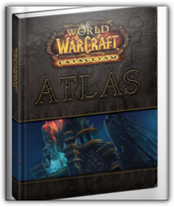
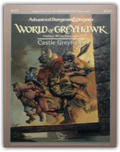
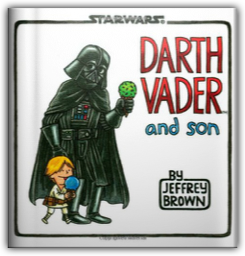
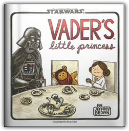

|

Fantasy Hero
Rob Bell, George MacDonald

A fantasy genre book for the Hero System, including the new Hero System 5th Edition

The Devil's Dictionary
Ambrose Bierce
Born in Ohio in 1842, journalist, short-story writer and critic Ambrose Bierce developed into one of this country's most celebrated and cynical wits — a merciless "American Swift" whose literary barbs were aimed at folly, self-delusion, politics, business, religion, literature and the arts. In this splendid "dictionary" of epigrams, essays, verses and vignettes, you'll find over 1,000 pointed definitions, e.g. Congratulation ("The civility of envy"), Coward ("One who in a perilous emergency thinks with his legs") and Historian ("A broad-gauge gossip"). Anyone who likes to laugh will love The Devil's Dictionary. Anyone looking for a bon mot to enliven their next speech, paper or conversation will have a field day thumbing through what H. L. Mencken called "some of the most gorgeous witticisms in the English language."

Of Skulls and Scrapfaggot Green
Bob Blake
Official GenCon X D&D tournament dungeon, this 64-page booklet includes area and village maps of Scrapfaggot Green, special tournament rules, background, the Sur-Khanian Maze, and six dungeon levels, making it an ideal mini-campaign. The players must find the key to Akbeth's Tower, enter and find an ancient skull, and with this skull journey through the Forbidden Lands to close an interdimensional doorway. A Baron of this kingdom will greatly reward a stalwart adventuring party. This product includes pre-rolled characters and their equipment and spells, and is especially created and approved for use with D&D.

GURPS Supers
Loyd Blankenship
Sourcebook for creating and playing Superhuman super-heroes or super-villians within the GURPS roleplaying game system. Allows for numerous types of game characters, not just comic book or movie Supers.
Gurps Cyberpunk: High-Tech Low-Life Roleplaying
Loyd Blankenship
A Steve Jackson gaming system that allows you to create any character type you want. You will need the GURPS rulebook for this to be of any use to you. Like all Steve Jackson games it is as complex as you want it to be and always fun.

The Rogues Gallery: A Compendium of Non-Player Characters for Advanced Dungeons & Dragons
David Blume
No longer will you the Dungeon Master need to spend precious time laboring over the task of generating non-player characters. This valuable booklet contains hundreds of pre-rolled non-player characters of all classes and types, complete with alignments, sex, personalities and much more. The Rogues Gallery is specially designed to be compatible with Advanced Dungeons & Dragons. It will save you time in creating your non-player characters, thus allowing you to pursue the other interesting aspects of your campaign.

Dungeon Crawl Classics #29: The Adventure Begins
Bret Boyd, Michael Ferguson, Andrew Hind
Remember the good old days, when adventures were underground, NPCs were there to be killed, and the finale of every dungeon was the dragon on the 20th level? Those days are back. Dungeon Crawl Classics don't waste your time with long-winded speeches, weird campaign settings, or NPCs who aren't meant to be killed. Each adventure is 100% good, solid dungeon crawl, with the monsters you know, the traps you fear, and the secret doors you know are there somewhere.

World of Warcraft Cataclysm Atlas
BradyGames
BradyGames’ World of Warcraft Cataclysm Atlas includes the following:

Castle Greyhawk
Mike Breault
Castle Greyhawk contains 13 detailed levels for adventuring and exploration. Each level is a seperate adventure written by a different author and each has its own unique brand of insane and baffling weirdness. Some levels involve solving puzzles and some require good old hacking and slashing. The adventures can be played seperately or all together as a grand quest to free Castle Greyhawk from the evil, rotten hordes that are plaguing it. The common theme to this dungeon is that no joke is so old, no pun is so bad, and no schtick is so obvious that it can't be used to confuse and trip up PCs!

Darth Vader and Son
Jeffrey Brown
What if Darth Vader took an active role in raising his son? What if "Luke, I am your father" was just a stern admonishment from an annoyed dad? In this hilarious and sweet comic reimagining, Darth Vader is a dad like any other—except with all the baggage of being the Dark Lord of the Sith. Celebrated artist Jeffrey Brown's delightful illustrations give classic Star Wars® moments a fresh twist, presenting the trials and joys of parenting through the lens of a galaxy far, far away. Life lessons include lightsaber batting practice, using the Force to raid the cookie jar, Take Your Child to Work Day on the Death Star ("Er, he looks just like you, Lord Vader!"), and the special bond shared between any father and son.

Vader's Little Princess
Jeffrey Brown
In this irresistibly funny follow-up to the breakout bestseller Darth Vader and Son, Vader—Sith Lord and leader of the Galactic Empire—now faces the trials, joys, and mood swings of raising his daughter Leia as she grows from a sweet little girl into a rebellious teenager. Smart and funny illustrations by artist Jeffrey Brown give classic Star Wars moments a twist by bringing these iconic family relations together under one roof. From tea parties to teaching Leia how to fly a TIE fighter, regulating the time she spends talking with friends via R2-D2's hologram, and making sure Leia doesn't leave the house wearing only the a skirted metal bikini, Vader's parenting skills are put hilariously to the test. |
 Made with Delicious Library
Made with Delicious Library